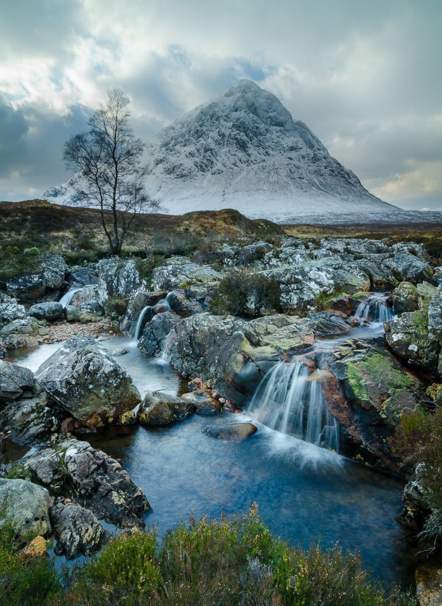
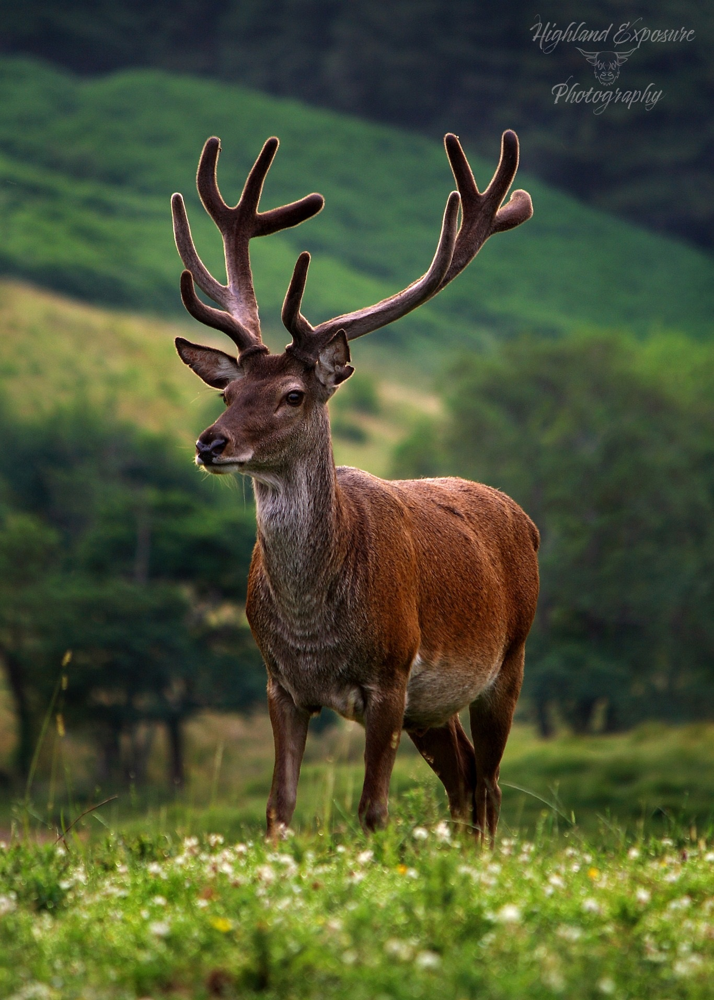
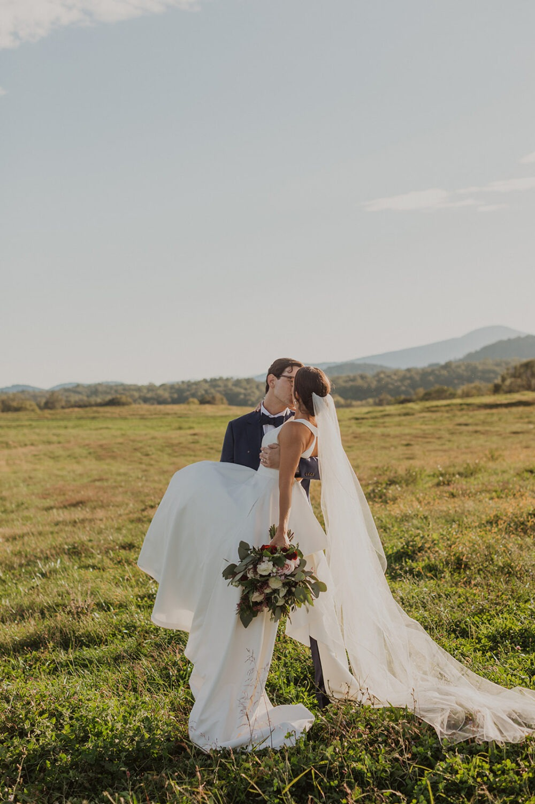

Portfolio

Portrait
Capturing the majestic beauty of Scotland's landscapes, including mountains, lochs, and coastal scenes. Ideal for editorial use, wall art, and publications.

Landscape
Capturing the majestic beauty of Scotland's landscapes, including mountains, lochs, and coastal scenes. Ideal for editorial use, wall art, and publications.

Wildlife
Specializing in the diverse wildlife of Scotland, with a focus on birds. Perfect for nature magazines, wildlife organizations, and personal collections.

Wedding
Documenting weddings with a creative and detailed approach, capturing the joy and essence of the special day. This service includes pre-wedding consultations, coverage of the ceremony and reception, and a digital album.